§1.1 ｜ 古典几何简史
§1.1 古典几何简史
几何学的源起
几何学是一门非常古老的学问。无论是古代中国、古埃及、古巴比伦还是古印度，在所有文明的源头，人类出于实际生活需要和对美的追求，都各自发展出了几何的雏形。
我们知道, 长度是容易测量的, 带着绳子即可, 但是已知长度求面积则是一个复杂很多的几何问题. 先人们在没有任何系统知识的条件下, 就已经通过代代相传的经验, 学会了如何求各种基本图形的面积 (图 1.1):
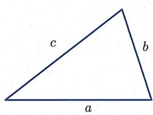
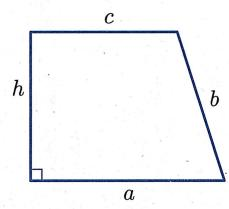
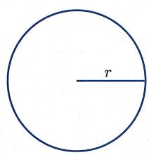
图1.1 几种基本图形
当时的几何知识主要是由建筑师、大地测量员、税收官等人所掌握。例如，据莫斯科纸草书记载，公元前1850年的古埃及人就已经会计算四棱台的体积，这想必跟搭建金字塔有着密不可分的联系。而计算面积更是古埃及人的拿手好戏：由于尼罗河定期泛滥，河水经常冲走已经划分好的土地，法老不得不重新分配土地，而只有会准确计算土地面积才能公平地收税。
当然, 几何学的起源也与一些脱离生产者 (比如巫祝、祭司等神职人员) 致力于设计庙宇、金字塔等有密切关系. 不过, 此时的古人们并没有抽象图形的概念. 例如, 当他们提起长方形时, 他们表示的往往是具体长方形田地或物件的边界. 而且虽然古人们有令人叹为观止的公式, 但这些公式是由经验积累而来的. 一方面他们所用的计算公式并不都正确;
另一方面, 即使是正确的公式, 也并没有推导. 当然他们也并不关心如何推导和理解公式, 而只关心这些公式的实际应用. 对于这个时代的数学发展与成就, 我们要从历史的角度, 客观而理性地加以认识, 既不用在正确性上苛求古人, 也不必过于热情夸赞.
古希腊时代的几何
不可否认, 古希腊时代是几何学发展成形的关键时期. 这一时代的先哲们出于对自然法则认知的渴望和对永恒奥秘的探求, 将几何学发展成一门基于逻辑推理、具有严格体系的学问. 这些人中, 首先值得一提的是米利都的泰勒斯 (Thales, 约前 624—约前 548). 传说他是第一个通过逻辑推理证明数学定理的人, 并被誉为哲学之父、科学之父. 在提及泰勒斯时, 亚里士多德曾有名言:
对于泰勒斯而言,首要问题不是我们知道什么,而是如何知道.
他所证明的定理是
（泰勒斯定理） 半圆的内接角（即直径所对的圆周角）是直角（图1.2).
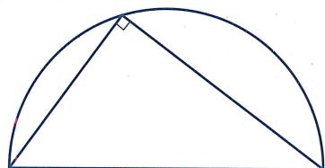
图1.2 泰勒斯定理
据说, 泰勒斯还利用相似三角形原理测量了金字塔的高度: 取一根竖直的棍子, 在其影子和其长度相等的那一刻, 测量金字塔影子的长度. 实际上, 泰勒斯还是为几何学命名的人: 他把表示地球的希腊词语 和表示测量的希腊词语 合在一起, 造出了拉丁语的几何这个词, 并逐渐演化为英文单词 geometry.
接下来一位重要人物是毕达哥拉斯 (Pythagoras, 约前 585—约前 500). 他创立了毕达哥拉斯学派, 以 “万物皆数” 为学派格言. 可能是受音律中所出现整数之比的启发, 他们认为 “一切可知的事物都有数字; 若无数字, 任何事物都无法被构想, 也不可能被理解.”
（勾股定理, 也称毕达哥拉斯定理） 直角三角形斜边的平方是两直角边的平方和 (图 1.3):
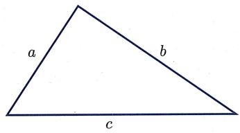
图1.3 勾股定理
除此之外, 毕达哥拉斯学派还从正五边形出发, 发现了黄金分割比 (见习题 1 第 1.2 题). 应该说是从毕达哥拉斯学派开始, 数学的研究对象即数与形开始脱离实际事物或实际形象, 成为思维的抽象产物.
注意此时数的表示形式和几何之间有严格的关系：数的平方（或两个数的乘积）总是表示面积，数的立方（或三个数的乘积）总是表示体积。这也是为什么我们一般会把 读作“ 的平方” ，而不是“ 的2次方”。图1.4展示了数、平方数、立方数的几何含义。
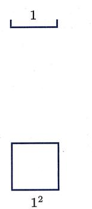
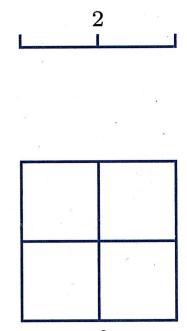
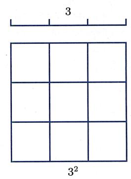
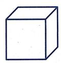
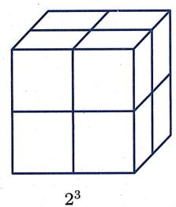
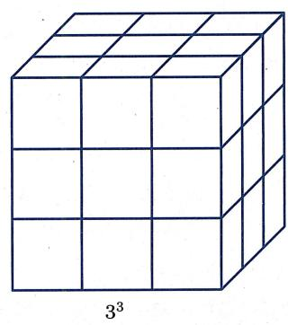
图1.4 数、平方数与立方数
下一位对几何产生重要影响的是柏拉图 (Plato, 前 427—前 347). 他并不是一位数学家, 而是一位哲学家. 他在雅典建立了一个学校, 即柏拉图学园. 传说该学园大门上写着:
不懂几何者不得入内.
柏拉图的朋友泰特拖斯 (Theaetetus, 约前 417—前 369) 证明了有且仅有五个正多面体, 即正四面体、立方体、正八面体、正十二面体和正二十面体 (见本书推论 6.2.2). 柏拉图主张数学是用以理解“永恒存在之理念世界”的工具,并将这些正多面体对应于“风、火、水、土”等元素,因而这些正多面体也被称为柏拉图多面体.
柏拉图学园培养出了那个时代最优秀的老师和研究者, 其中包括欧多克索斯 (Eudoxus, 约前 395—约前 342) 和亚里士多德 (Aristotle, 前 384—前 322). 关于他们的贡献, 我们不一一赘述, 只简要各提一句: 欧多克索斯首次以明确的公理为依据演绎数学, 他提出量的概念 (不可公度比被归结为 “量” 而不是 “数”) 以研究不可公度比, 而且他提出了用于计算曲边形面积和曲面体体积的穷竭法; 而亚里士多德讨论了 “定义” 的含义, 指出公理与公设的区别, 并给出很多定义、公理, 后被欧几里得采纳. 此外, 欧多克索斯的学生梅内克缪斯 (Menaechmus, 约前 380—前 320) 则在研究三大尺规作图难题之一的 “倍立方问题” 时引入了圆锥曲线, 大大拓展了几何学的研究对象.
亚里士多德曾指出, 从 “不存在的定义”(例如正十面体) 出发可以推出自身矛盾的逻辑结构. 而尺规作图则是确认几何对象存在性的重要手段, 因为古希腊人认为直线和圆是基本图形, 而尺、规是实现直线和圆的方式. 由此引发了大量 “仅用直尺、圆规作出给定图形” 的尺规作图问题, 例如作出给定线段的中垂线, 作出给定角的一半, 给定正方形时作出具有两倍面积的正方形等. 在此过程中, 人们发现有三个提法非常简单的问题, 一直找不到尺规作图方法, 即三大尺规作图难题:
- 化圆为方：给定任意圆，用尺规作出等面积的正方形.
- 倍立方：给定任意立方体，用尺规作出具有两倍体积的立方体.
- 三等分角：给定任意角，用尺规作出其三分之一大小的角.
直到 19 世纪, 人们借助群论等代数工具, 才证明了这三个尺规作图难题均不可解. 注意, 古希腊时人们发现和研究的不可公度数依然是可以尺规作图的数. 最早发现 “不可尺规作图数” 的人是意大利数学家利奥纳多 (即我们熟知的斐波那契, Fibonacci, 约 1170—约 1250): 他证明了方程
的根不能用尺规作图作出, 第一次表明数系所含的数超出了尺规作图所界定的范围.
总的来说, 从古希腊时代开始, 公理演绎法成为研究数学的主要手段, 大量数学成果开始涌现, 数学本身也逐渐成为纯理智的抽象研究, 成为绝对真理的一部分. 这个时期的数是依赖于几何的, 在此后将近两千年的时间里, 几何学几乎是全部严密数学的基础. 同时, 因为不可公度比的发现, 几何与数慢慢开始分道扬镳, 有少量数学家开启了理解 “难以琢磨之数” 的漫长征途.
《几何原本》以及古希腊晚期
《几何原本》(Elements) 集希腊古典时期数学之大成, 是一本承上启下的书, 由欧几里得 (Euclid, 前 325—前 265) 在大约公元前 3 世纪完成. 据说欧几里得曾对国王托勒密一世说过: 不存在通向几何学的王室大道. 可见, 几何学在欧几里得的心中是普适的. 它不因人而异, 这也是科学的特征. 事实上, 《几何原本》的公理化体系对科学思维的影响是巨大的, 例如牛顿 (Newton, 1643—1727) 的巨著《自然哲学的数学原理》就是按照《几何原本》的公理化体系模式写的.
《几何原本》共十三卷, 第一卷到第六卷是平面几何 (其中第五卷为比例理论), 第七卷到第九卷是数论, 第十卷篇幅最长, 研究不可公度数 (包括形如 等的数) 的几何分类, 第十一卷到第十三卷则是立体几何. 在这本书中, 欧几里得从定义、公设与公理出发, 用逻辑演绎的方法, 证明了 465 个命题. 虽然这些命题绝大部分并非欧几里得所原创, 但全书的安排方式、公理公设的选择、定理由简单到复杂的排列顺序都是欧几里得所创的.
虽然用现代数学的观点看, 欧几里得的证明并非 “完全严格”, 但是, 在欧几里得那个时代, 这是严格的. 完全周到、细致、严密的表述, 要到希尔伯特《几何基础》的相关工作中才出现. 欧几里得在《几何原本》中所展现的 “定义 → 公理 → 命题” 的几何学逻辑体系是人类理性思维的光辉. 本书下一节中将对这些定义、公理公设及其优劣稍做更为具体的审视. 在此处, 我们想要强调的是《几何原本》中几何与代数的统一性: 事实上, 在那个时代, 几何、数学甚至科学都没有严格的区分, 例如, 在第九卷中欧几里得用反证法证明了存在无穷多个素数, 令人拍案叫绝:
(《几何原本》第九卷命题 20) 素数有无穷多个.
用反证法. 假设 为所有素数. 考察正整数 . 因为对任意 , 均有 , 所以 是一个合数. 于是由定义, 有不同于 1 和自身的素因子, 我们记之为 . 因为 必为某个 , 所以 必将整除
但这是不可能的. 故上述假设不成立, 即存在无穷多个素数, 证毕. □
上文已经提到, 古希腊时期的代数往往是 “几何代数”, 两个数的乘积总是被理解为矩形的面积. 例如, 乘法对加法的分配律 (图 1.5)
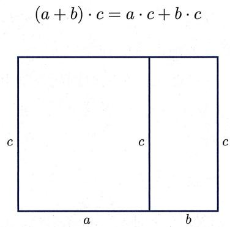
图1.5 加法分配律
则变成《几何原本》中如下命题：
(《几何原本》第二卷命题 1) 如果矩形的一边被截成几段, 那么原先矩形的面积是各个小段和未截线段构成的矩形面积之和.
托勒密王朝把亚历山大城建设成为一个文化中心, 此时出现的《几何原本》对于古希腊数学进入辉煌的亚历山大时期起到了不可磨灭的作用. 数学的理论和应用都经历了长足发展, 数学 (尤其是几何) 开始转变为应用理论研究更加实用的问题, 例如各种复杂量的近似计算、天文学所需的球面三角学等. 此时, 数也逐渐脱离几何, 可以自由进行代数计算. 例如, 阿基米德 (Archimedes, 前 287—前 212) 运用高超技巧计算出 的近似值,
作为对比, 在《几何原本》中, 欧几里得虽然证明了很多不同形状的面积之比, 但并没有任何命题阐述圆的面积 “值”! 此外, 阿基米德对于欧多克索斯穷竭法的应用也令人赞叹, 可以视为微积分的雏形. 他明确地提出并多次使用
（(欧多克索斯—) 阿基米德公理） 对于任意正数 a, b，必存在正整数 n 使得 na > b.
后来人们才意识到, 这个性质是实数完备性的重要组成部分.
中国古代的几何
跟西方相比, 几何在中国也同样有着悠久的历史: 在公元前 15 世纪的甲骨文中, 就已经出现了 “规” 和 “矩” 两个字. 相传伏羲造规、矩, 作方、圆, 而《史记》中也记载了大禹治水时 “左准绳, 右规矩”. 我国古代在建筑工程、水利工程上的成就, 其实是离不开丰富的几何知识作为支撑的.
早在春秋末期, 墨子 (前 476 或前 480—前 390 或前 420) 在《墨经》中就记载了丰富的几何学知识. 事实上, 该书中不少内容可以视为理论几何学的萌芽, 例如给出了点 (端, 体之无序而最前者也)、圆 (圜, 一中同长也)、平行 (平, 同高也)、线段相等 (同长, 以正相尽也) 等概念的定义. 遗憾的是, 因为种种原因这些处于萌芽状态的思想失去了进一步发展的机会.
中国最古老的天文学和数学著作《周髀算经》 就从讨论直角三角形的性质出发, 推演有关地上和天上距离测量的方法. 该书中不仅记载了一般形式的勾股定理:
以日下为勾，日高为股，勾股各自乘，并而开方除之，得邪至日，
而且以较为隐晦的方式给出了证明.
部分成书于公元前3世纪、最后成书于1世纪的《九章算术》，体现了中国古代数学的实用主义特色。全书分九卷，目的不在于像《几何原本》那样建立理论体系，而是分 246 题, 对于实际应用中碰到的各类具体问题 (比如对于特定图形计算长度、面积、体积) 给出了解法, 其中关于斜截三棱柱体积的计算方法, 西方直到 18 世纪才得到. 之后刘徽 (约 225—约 295) 为《九章算术》作注, 更是整理了其中的数学体系, 奠定了相关的理论基础. 此外, 刘徽利用割圆术 (即用正 n 边形逼近圆) 得出 的值接近 3.1416, 比阿基米德的结果更优. 而南北朝时祖冲之 (429—500) 更是给出了
这样一个领先西方一千多年的结果! 不过, 中国古代数学家并未得出 是无理数的结论, 即并不知道 (抑或并不关心)“无论如何精确地用有理数去表达 , 所得的结果都只能是近似值”. 值的精确度, 主要是一个计算耐力的问题, 而不是理论洞见的问题. 这是技术与科学的一个典型区别.
此外，很遗憾的是，由于程朱理学以及八股取士制度的施行，中国古代辉煌的数学成就一度濒临灭绝。明末数学家徐光启(1562—1633)曾说道：
算数之学特废于近世数百年间尔. 废之缘有二: 其一为名理之儒土苴天下之实事; 其一为妖妄之术谬言数有神理, 能知来藏往, 靡所不效. 卒于神者无一效, 而实者亡一存.
明末清初数学家梅文鼎 (1633—1721) 发掘中国古代数学并冶中西数学于一炉, 对中国数学的传承和发展起到了重要作用.
总的来说, 中国古代几何学以解决实际问题 (也包括天文、历法) 为目标, 是一种实用几何. 在这个基础上, 中国古代数学家们把几何问题算术化、代数化, 发展出了非常高超的计算技术. 此外, 值得一提的是, 中国古代数学并非完全没有理论证明, “问、答、术、注”的“注”中包含着很多理论证明. 但可惜的是, 这些证明并没有充分展开成完整的理论体系. 相比之下, 古希腊数学以系统性、逻辑性见长, 而中国古代数学则更强调计算方法以及对物理世界的应用.
解析几何的创立
罗马人的征服让希腊文明戛然而止, 大量典籍被焚毁、遗失, 之后延续千年的中世纪是科学的黑暗时期. 在教廷统治下, 人们只能学到少量粗浅的数学, 无论是数学理论还是应用, 都陷于停滞. 对此, 《古今数学思想》的作者克莱因 (M.Kline, 1908—1992) 说道:
我们可以看到, 数学在一个自由的学术气氛中最能获得成功, 那里既能对物理世界所提出的问题发生兴趣, 又有人愿意从抽象方面去思考由这些问题所引起的概念, 而不计其是否能谋取眼前的或实际的利益.
中世纪结束后, 西方世界进入文艺复兴时期, 伴之而来的是数学复兴. 事实上, 此时复兴的近代数学并不能简单认为是古希腊数学之延续. 此后发展出来的代数符号化、微积分等, 与古希腊 “纯几何思想” 并不一致, 而表现出很强烈的 “东方特征”: 更强调计算方法以及对现实世界的应用. 究其原因, 在于数学复兴之源头是十字军东征所带回的存于阿拉伯世界之数学典籍: 古希腊典籍流传到阿拉伯地区, 同时东方数学 (中国数学以及印度数学) 经由印度也进入阿拉伯地区, 跟那里保存下来的古希腊数学逐渐融合并缓慢发展. 所以, 复兴后的数学事实上是西方数学家们在融合东西方数学基础上发展起来的.
解析几何的出现, 对于几何学以及对于整个数学而言, 都是至关重要的. 人们普遍认同, 解析几何是 17 世纪初由法国数学家笛卡儿 (R. Descartes, 1596—1650) 创立的. 笛卡儿比较了代数与几何的优劣. 他认为几何太过依赖图示, 以致毫无必要地使人的想象力疲劳不堪, 但同时也指出代数是混乱和含糊的艺术, 使人的头脑陷入困惑. 因此, 他希望
- 通过代数过程把几何从图示的使用中解放出来;
- 通过几何解释赋予代数运算意义.
事实上, 笛卡儿创立解析几何的著作发表于其旨在寻求 “在一切领域建立真理的方法” 之哲学著作《方法论》里, 作为三篇附录之一 (每篇附录都比正文长) 出现的. 在该附录中, 笛卡儿从一个几何问题开始, 把它转变为代数方程的语言, 然后尽可能地简化这个方程, 最后给出该简化方程的几何解.
同时代的费马 (Fermat, 1601—1665) 在其著作《轨迹导论》中也广泛使用坐标系. 费马提道:
每当最终方程中的两个未知量被求出的时候, 我们就有了一条轨迹, 该轨迹描述了一条线, 直线或曲线.
笛卡儿和费马都通过建立坐标系, 使用代数工具研究几何问题. 二者的区别在于, 费马是对古希腊人工作的继承, 着眼于用代数方法对古希腊时期阿波罗尼奥斯 (Apollonius, 约前 262—前 190) 的工作做重新表述. 而笛卡儿则很清楚代数的威力, 并明确表明他在改换研究几何的方法. 方法论是他一切工作的首要对象. 因此, 称笛卡儿为解析几何之父是完全妥当的.
解析几何的出现对于近代数学与科学的发展起到了关键性作用: 在把对于图形的分析转化为对于数的分析后, 人们可以便利地处理无穷的过程, 从而微积分、天体力学等学科领域开始出现并迅速发展起来.
第五公设与非欧几何
在《几何原本》中, 欧几里得共提出了 5 条公设, 其中第五公设在数学史上有着极其重要的影响:
(第五公设) 若一直线与两直线相交, 且若同侧所交两内角之和小于两直角, 则两直线延长后必相交于该侧的一点. 第五公设等价于如下的
(平行公设)
给定直线外一点, 至多有一条直线过该点且平行于给定
直线.
跟其他公设相比, 第五公设最为拗口也最不显然. 事实上, 从《几何原本》中命题的排布可以看出来, 欧几里得本人也尽量避免使用这个公设: 直到命题 29 他才不得不开始使用这个公设. 此外, 还要注意的是, 第五公设的陈述看起来比平行公设要复杂, 但却明确表明了古希腊数学的一个特征: 尽量避免使用无穷 (“相交” 是有限点处发生的现象, 而 “平行” 则需要延长到无穷远才能确定).
自从古希腊后期的托勒密 (Ptolemy, 约 100—约 168) 开始, 有很多数学家前仆后继, 试图用其他公设/公理证明第五公设. 虽然他们都失败了, 但作为副产品, 他们却发现了很多 (在假定其他公设/公理成立的前提下) 跟第五公设等价的命题, 例如
- 每个三角形的内角和都是 .
- 存在一个三角形, 其内角和是 .
- 存在一对相似而不全等的三角形.
- 存在一个长方形 (即内角均为直角的四边形).
- 平行于同一直线的两条直线是平行的.
- 直角三角形的勾股定理成立.
- 一般三角形的余弦定理成立.
- 存在面积任意大的三角形.
我们把另外一个大家耳熟能详但与第五公设等价的命题藏在习题1第6题里.
在所有这些试图证明第五公设的努力中, 这里仅提一下德国数学家兰伯特 (Lambert, 1728—1777). 他也许是最接近于发现真相, 却实际上未能发现非欧几何的人. 他曾写道:
欧几里得第五公设的证明可以发展到这样一种程度, 即表面上是只剩下了一点微不足道的东西, 但仔细分析表明, 在这点微不足道的东西里面, 潜藏着问题症结. 通常, 它要么包含了那个正在证明的命题, 要么包含了一个相当于这个命题的假设.
顺便提一下, 兰伯特还是最早证明 是无理数的数学家.
非欧几何的发现一般归功于以下三人：罗巴切夫斯基 (Lobachevsky, 1792—1856)、波尔约 (J.Bolyai, 1802—1860) 和高斯 (Gauss, 1777—1855). 罗巴切夫斯基被视为“几何学的哥白尼”. 他在 1829 年发表了论文《论几何学原理》，公布了一种新的几何学，其赖以建立的基础是一个与平行公设背道而驰的假设：
过直线外一点可以作多于一条与给定直线不相交的直线.
从这个新公设出发, 他推导出了一个和谐的几何结构, 没有任何内在逻辑矛盾. 罗巴切夫斯基完全认识到了他发现的新几何具有重要意义. 他为此先后写了三部专著, 详尽地介绍新几何.
波尔约与其父亲都毕生致力于平行公设的研究. 1832 年, 在其父亲出版的《试论》一书附录里, 波尔约发表了论文《绝对空间的科学》. 波尔约的绝对空间几何学是在欧氏几何公理体系里去掉平行公设而形成的. 他深入且精辟地剖析了绝对空间几何学公理体系的逻辑推论, 建立起一系列深刻的定理, 这些定理对于欧氏几何和非欧几何均成立. 波尔约指出, 仅靠数学推理无法确定物理存在的几何空间是欧氏的还是非欧的.
高斯应该是第一个明白“证明平行公设是徒劳之举”的人, 不过, 他一生都未曾公开发表或支持过这一观点. 1825 年高斯发表了经典著作《曲面的一般研究》. 在此著作中, 他引入并研究了高斯曲率, 证明了高斯曲率只与曲面上的度量性质相关, 和曲面的形状无关 (比如平面与圆柱面度量性质相同, 但形状不同), 并指出了研究仅与度量相关之新几何的可能性. 后来, 1854 年 6 月 10 日, 黎曼 (Riemann, 1826—1866) 在哥廷根大学进行讲师就职演说, 题为 “论几何学基础的假设”, 进一步拓展了这一思想, 提出了流形的概念, 将笛卡儿的全局坐标推广到局部坐标, 并指出可以通过局部结构 (黎曼度量, 即 “无限靠近的任意两点之间的距离”) 来了解空间的整体距离. 黎曼几何学是更具普遍意义的非欧几何学, 使罗巴切夫斯基、波尔约的非欧几何学成为特例. 黎曼还提及了在物理中的潜在应用, 后来爱因斯坦 (Einstein, 1879—1955) 接过这一接力棒, 使之成为广义相对论的数学基石, 彻底改变了人类对于空间和宇宙的认知.
射影几何
射影几何的形成也许最早可以追溯到古希腊时期对圆锥曲线的研究. 其中最出名的著作当属阿波罗尼奥斯的《圆锥曲线论》，而亚历山大时期的帕普斯 (Pappus, 约 290—350) 引入交比的概念，并在欧氏几何框架里证明了射影几何的第一个定理，即帕普斯定理 (见第五章定理 5.4.1). 文艺复兴之后，射影几何的先驱是与笛卡儿、费马同时代的德萨格 (Desargues, 1591—1661). 他本人是一位建筑师和军事工程师，但他有着非凡的想象力. 受文艺复兴时期所发展起来的透视画法启发，他写下著作《试图处理一个圆锥曲线与一个平面相交之结果的草稿》. 其基本结果就是通过射影的方法统一地处理圆锥曲线 (图 1.6)，使貌似不同种类的圆锥曲线合而为一. 他引入无穷远点、调和点列等概念, 并证明了描述实景与截景的德萨格定理 (见第五章定理 5.4.3). 之后年仅 16 岁的帕斯卡 (Pascal, 1623—1662) 在学习德萨格的著作后, 证明了著名的帕斯卡定理 (见第五章定理 5.4.2). 可惜他过早地放弃了数学, 而改投到神学. 这几个定理最初都是在欧氏几何框架里面所陈述和证明的, 本书第五章将从射影几何的角度解释并证明它们.
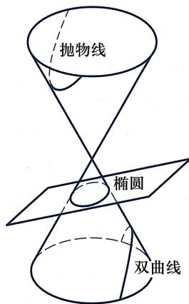
图1.6 圆锥曲线
最终使得射影几何独立成为一个几何分支的是19世纪数学家庞斯莱(Poncelet, 1788-1867). 庞斯莱曾参加拿破仑对俄战争, 被俘后在狱中写出《论图形的射影性质》, 建立了射影几何基础. 他还建立了具有重要意义的对偶性原理, 例如在平面射影几何中, 将“点”与“线”互换, “位于”与“通过”互换, “共线”与“共点”互换, 所得结论依然成立. 庞斯莱使用德萨格的中心投影和无穷远点来建立复射影平面的概念, 而沙勒(Chasles, 1793—1880)接续了庞斯莱的工作, 强调交比及其在射影变换下不变性的重要性. 他还开创了枚举几何学的研究, 后来该方向成为代数几何学的一个分支.
射影几何的发展与壮大也需要归功于冯·施陶特 (von Staudt, 1798—1867)、普吕克 (Plücker, 1801—1868)、克莱因 (F.Klein, 1849—1925) 等人. 例如, 冯·施陶特使得射影几何彻底摆脱了对长度和叠合的依靠, 使人们认识到在逻辑上射影几何比欧氏几何更加基本; 普吕克引入了齐次坐标系, 从而将解析几何方法引入射影几何; 克莱因则把当时的各种几何都统一归纳到射影几何的框架里.
埃尔朗根纲领
19 世纪的几何展现出了百花齐放的特色, 不同的几何涌现出来并迅速发展, 而这促使人们思考如下问题: 究竟什么是几何? 最终克莱因使用代数学中群 的概念, 将当时所有几何统一在同一个框架里, 这就是著名的埃尔朗根纲领. 该纲领是克莱因23岁时被任命为埃尔朗根大学教授时所做的就职演讲, 其核心思想是“变中找不变”, 即
每种几何都由相应的变换群所刻画, 几何要研究的正是在该变换群下保持不变的性质.
例如, 欧氏平面几何主要研究在刚体变换群 (或者欧氏变换群) 之下保持不变的性质, 比如长度、角度、面积等. 更一般地, 要研究相似形理论, 就需要考虑更大一点的群, 即相似变换群. 相比之下, 射影几何所研究的是在射影变换下不变的性质. 因为射影变换群更大 (它包含了刚体变换群等作为其子群), 所以射影几何是比欧氏几何更为一般的几何. 当然, 在射影几何中, 长度、角度、面积等几何量不再保持不变. 于是这些量不再是射影几何的研究对象. 但是诸如代数曲线的次数、直线上四个点形成的交比等量在射影变换下仍然保持不变, 从而是射影几何的研究对象.
值得一提的是, 在埃尔朗根纲领接近结尾处, 克莱因给出了一段关于“位置分析学”(即拓扑学) 的论述, 将拓扑学描述为在某种 “无穷小扭曲群” 下保持不变的学科, 预见到了几何学新分支 “拓扑学” 的兴起. 虽然拓扑学的源起可以追溯到欧拉 (Euler, 1707—1783) 的七桥问题以及凸多面体公式 (见第六章定理 6.2.1), 但拓扑学真正成为一门学科还是 19 世纪末、20 世纪初的事情, 克莱因本人对此做出了重要贡献. 特别地, 他构造出了不可定向的封闭曲面 (克莱因瓶, 见图 6.15), 拓展了人们关于拓扑曲面的理解.
几何公理化
我们知道, 从现代视角来看, 欧几里得公理体系并不完善. 在两千多年的时间里, 人们在其中发现了各种各样的问题. 19 世纪后半叶, 数学的另一个重要里程碑是实数理论的建立和分析学的严格化. 自此, 代数和分析有了坚实的基础, 不再依赖于几何. 另一方面, 非欧几何的发现让人们意识到, 欧氏几何也只是人造理论, 并不一定是天然而自洽的. 于是, 为几何学建立一个不依赖空间/物理直觉的严格公理化基础便自然而然地被提上日程.
不少数学家在几何学公理化进程中都做出了很好的工作。比如帕施 (Pasch, 1843—1930)，他最早对直线上的序公理开展研究，并提出用以刻画平面中序关系的帕施公理（即下文的希尔伯特公理 (II.4))，而且在 1882 年最早建立射影几何公理体系。包括佩亚诺 (Peano, 1858—1932) 在内的多位数学家也先后给出了欧氏几何的公理体系。最终，希尔伯特 (Hilbert, 1862—1943) 于 1899 年出版《几何基础》，其给出的欧氏几何公理体系备受认可，达成了为欧氏几何建立严格公理体系这一目标。